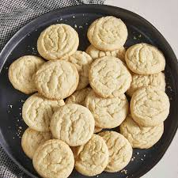

Home
Easy Sugar Cookies

Description
This is a simple sugar cookie recipe I found on Allrecipes. Sugar Cookies are often a crowd
pleaser at Christmas parties, but can be enjoyed any time of the year.
Ingredients
- 2 3/4 cups all purpose flour
- 1 teaspoon baking soda
- 1/2 teaspoon baking powder
- 1 cup butter softened
- 1 1/2 cups white sugar
- 1 egg
- 1 teaspoon vanilla extract
Steps
- Gather all ingredients. Preheat the oven to 375 degrees F (190 degrees C)
- Stir flour, baking soda, and baking powder together in a small bowl.
- Beat sugar and butter together in a large bowl with an electric mixer until smooth.
- Beat in egg and vanilla.
- Gradually blend in flour mixture.
- Roll dough into walnut-sized balls and place 2 inches apart onto ungreased baking sheets.
- Bake in the preheated oven until edges are golden, 8 to 10 minutes.
Cool on the baking sheets briefly before removing to a wire rack to cool completely.